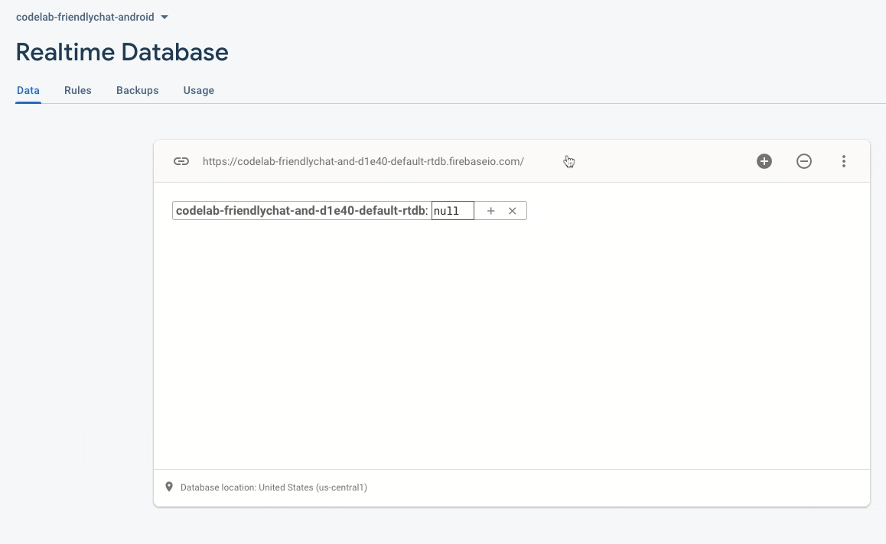

Image: Working Friendly Chat app.
Welcome to the Friendly Chat codelab. In this codelab, you'll learn how to use the Firebase platform to create a chat app on Android.
What you'll learn
- Allow users to sign in.
- Sync data using the Firebase Realtime Database.
- Store binary files in Firebase
What you'll need
- Android Studio version 4.0+.
- An Android device or Emulator with Android 4.4+.
Clone the repository
Clone the GitHub repository from the command line:
$ git clone https://github.com/firebase/codelab-friendlychat-android
Import into Android Studio
In Android Studio click File > Open and select the build-android-start directory ( ) from the directory where you downloaded the sample code.
You should now have the build-android-start project open in Android Studio. If you see a warning about a google-services.json file missing, don't worry. It will be added in the next step.
In this step you will create a Firebase project to use during this codelab and add the project configuration to your ap.
Create a new project
- In your browser go to the Firebase console.
- Select Add project.
- Select or enter a project name, you can use any name you want.
- You will not need Google Analytics for this project, so you can disable it when asked.
- Click Create Project and when your project is ready click Continue
Add Firebase to your app
- From the overview screen of your new project, click the Android icon to launch the setup workflow:

- On the next screen, enter
com.google.firebase.codelab.friendlychatas the package name for your app. - Enter the SHA1 of your signing keystore. Run the command below in the project directory to determine the SHA1 of your debug key:
./gradlew signingReport
You should see some output like this, the important line is the SHA1 key:
Store: /Users/username/.android/debug.keystore Alias: AndroidDebugKey MD5: A5:88:41:04:8F:06:59:6A:AE:33:76:87:AA:AD:19:23 SHA1: A7:89:F5:06:A8:07:A1:22:EC:90:6A:A6:EA:C3:D4:8B:3A:30:AB:18 SHA-256: 05:A2:2A:35:EE:F2:51:23:72:4D:72:67:A5:6A:8A:58:22:2C:00:A6:AB:F6:45:D5:A1:82:D8:90:A4:69:C8:FE Valid until: Wednesday, August 10, 2044
- Click Register App and then click Download google-services.json to download the
google-servicesconfiguration file. - Copy the
google-services.jsonfile into theappdirectory in your project. After the file is downloaded you can Skip the next steps shown in the console (they've already been done for you in the build-android-start project).
- To be sure that all dependencies are available to your app, you should sync your project with gradle files at this point. Select File > Sync Project with Gradle Files from the Android Studio toolbar.
Now that you have imported the project into Android Studio and configured the google-services plugin with your JSON file, you are ready to run the app for the first time.
- Start your Android device or emulator.
- In Android Studio click Run (
 ) in the toolbar.
) in the toolbar.
The app should launch on your device. At this point, you should see an empty message list, and sending and receiving messages will not work. In the next section, you authenticate users so they can use Friendly Chat.
This app will use Firebase Realtime Database to store all chat messages. Before we add data, we should make sure that the app is secure and that only authenticated users can post messages. In this step we will enable Firebase Authentication and configure Realtime Database Security Rules.
Configure Firebase Authentication
Before your application can access the Firebase Authentication APIs on behalf of your users, you will have to enable it
- Navigate to the Firebase console and select your project
- Select Authentication
- Select the Sign In Method tab
- Toggle the Google switch to enabled (blue)
- Set a support email.
- Press Save on the resulting dialog
If you get errors later in this codelab with the message "CONFIGURATION_NOT_FOUND", come back to this step and double check your work.
Add Firebase Auth dependency
The firebase-auth SDK allows easy management of authenticated users of your application. Confirm the existence of this dependency in your app/build.gradle file.
app/build.gradle
implementation 'com.google.firebase:firebase-auth'
Configure Realtime Database
As mentioned, this app will store chat messages in Firebase Realtime Database. In this step we will create a database and configure the security via a JSON configuration language called Security Rules.
- Go to your project in the Firebase console and select Realtime Database from the left navigation.
- Click Create Database create a new Realtime Database instance and then select the
us-central1region and click Next. - When prompted about security rules, choose locked mode and click Enable.
Once the database has been created, select the Rules tab and update the rules configuration with the following:
{
"rules": {
".read": "auth != null",
".write": "auth != null"
}
}
Click "Publish" to publish the new rules.
For more information on how this works (including documentation on the "auth" variable) see the Firebase security documentation.
Add basic sign-in functionality
Next we'll add some basic Firebase Authentication code to the app to detect users and implement a sign-in screen.
Check for current user
First add the following instance variables to MainActivity.java:
MainActivity.java
// Firebase instance variables
private FirebaseAuth mFirebaseAuth;
Now let's modify MainActivity.java to send the user to the sign-in screen whenever they open the app and are unauthenticated. Add the following to the onCreate method after mUsername has been initialized:
MainActivity.java
// Initialize Firebase Auth and check if the user is signed in
mFirebaseAuth = FirebaseAuth.getInstance();
if (mFirebaseAuth.getCurrentUser() == null) {
// Not signed in, launch the Sign In activity
startActivity(new Intent(this, SignInActivity.class));
finish();
return;
}
Then implement the getUserPhotoUrl() amd getUserName() methods to return the appropriate information about the currently authenticated Firebase user:
MainActivity.java
@Nullable
private String getUserPhotoUrl() {
FirebaseUser user = mFirebaseAuth.getCurrentUser();
if (user != null && user.getPhotoUrl() != null) {
return user.getPhotoUrl().toString();
}
return null;
}
private String getUserName() {
FirebaseUser user = mFirebaseAuth.getCurrentUser();
if (user != null) {
return user.getDisplayName();
}
return ANONYMOUS;
}
Then implement the signOut() method to handle the sign out button:
MainActivity.java
private void signOut() {
mFirebaseAuth.signOut();
mSignInClient.signOut();
startActivity(new Intent(this, SignInActivity.class));
finish();
}
Now we have all of the logic in place to send the user to the sign-in screen when necessary. Next we need to implement the sign-in screen to properly authenticate users.
Implement the Sign-In screen
Open the file SignInActivity.java. Here a simple Sign-In button is used to initiate authentication. In this step you will implement the logic to Sign-In with Google, and then use that Google account to authenticate with Firebase.
Add an Auth instance variable in the SignInActivity class under the // Firebase instance variables comment:
SignInActivity.java
// Firebase instance variables
private FirebaseAuth mFirebaseAuth;
Then, edit the onCreate() method to initialize Firebase in the same way you did in MainActivity:
SignInActivity.java
// Initialize FirebaseAuth
mFirebaseAuth = FirebaseAuth.getInstance();
Next, initiate signing in with Google. Update SignInActivity signIn() method to look like this:
SignInActivity.java
private void signIn() {
Intent signInIntent = mSignInClient.getSignInIntent();
startActivityForResult(signInIntent, RC_SIGN_IN);
}
Next, implement the onActivityResult method to SignInActivity to handle the sign in result. If the result of the Google Sign-In was successful, use the account to authenticate with Firebase:
SignInActivity.java
@Override
public void onActivityResult(int requestCode, int resultCode, Intent data) {
super.onActivityResult(requestCode, resultCode, data);
// Result returned from launching the Intent in signIn()
if (requestCode == RC_SIGN_IN) {
Task<GoogleSignInAccount> task = GoogleSignIn.getSignedInAccountFromIntent(data);
try {
// Google Sign In was successful, authenticate with Firebase
GoogleSignInAccount account = task.getResult(ApiException.class);
firebaseAuthWithGoogle(account);
} catch (ApiException e) {
// Google Sign In failed, update UI appropriately
Log.w(TAG, "Google sign in failed", e);
}
}
}
Implement the firebaseAuthWithGoogle method to authenticate with the signed in Google account:
SignInActivity.java
private void firebaseAuthWithGoogle(GoogleSignInAccount acct) {
Log.d(TAG, "firebaseAuthWithGoogle:" + acct.getId());
AuthCredential credential = GoogleAuthProvider.getCredential(acct.getIdToken(), null);
mFirebaseAuth.signInWithCredential(credential)
.addOnSuccessListener(this, new OnSuccessListener<AuthResult>() {
@Override
public void onSuccess(AuthResult authResult) {
// If sign in succeeds the auth state listener will be notified and logic to
// handle the signed in user can be handled in the listener.
Log.d(TAG, "signInWithCredential:success");
startActivity(new Intent(SignInActivity.this, MainActivity.class));
finish();
}
})
.addOnFailureListener(this, new OnFailureListener() {
@Override
public void onFailure(@NonNull Exception e) {
// If sign in fails, display a message to the user.
Log.w(TAG, "signInWithCredential", e);
Toast.makeText(SignInActivity.this, "Authentication failed.",
Toast.LENGTH_SHORT).show();
}
});
}
That's it! You've implemented authentication using Google as an Identity Provider in just a few method calls and without needing to manage any server-side configuration.
Test your work
Run the app on your device. You should be immediately sent to the sign-in screen. Tap the Google Sign-In button. You should then be sent to the messaging screen if everything worked well.
In this step we will add functionality to read and display messages stored in Realtime Database.
Import Sample Messages
- In the Firebase console, select Realtime Database from the left navigation menu.
- In the overflow menu of the Data tab, select Import JSON.
- Browse to the initial_messages.json file in the root of the cloned repository, and select it.
- Click Import.

Read Data
Add Firebase Realtime Database and Firebase Storage dependencies
In the dependencies block of the app/build.gradle file, the following dependencies should be included. For this codelab, they are already added for convenience; confirm this by looking in the app/build.gradle file:
Dependency in app/build.gradle
implementation 'com.google.firebase:firebase-database'
implementation 'com.google.firebase:firebase-storage'
Synchronize messages
In this section we add code that synchronizes newly added messages to the app UI by:
- Initializing the Firebase Realtime Database and adding a listener to handle changes made to the data.
- Updating the
RecyclerViewadapter so new messages will be shown. - Adding the Database instance variables with your other Firebase instance variables in the
MainActivityclass:
MainActivity.java
// Firebase instance variables
// ...
private FirebaseDatabase mDatabase;
private FirebaseRecyclerAdapter<FriendlyMessage, MessageViewHolder> mFirebaseAdapter;
Modify your MainActivity's onCreate method by replacing mProgressBar.setVisibility(ProgressBar.INVISIBLE); with the code defined below. This code initially adds all existing messages and then listens for new child entries under the messages path in your Firebase Realtime Database. It adds a new element to the UI for each message:
MainActivity.java
// Initialize Realtime Database
mDatabase = FirebaseDatabase.getInstance();
DatabaseReference messagesRef = mDatabase.getReference().child(MESSAGES_CHILD);
// The FirebaseRecyclerAdapter class comes from the FirebaseUI library
// See: https://github.com/firebase/FirebaseUI-Android
FirebaseRecyclerOptions<FriendlyMessage> options =
new FirebaseRecyclerOptions.Builder<FriendlyMessage>()
.setQuery(messagesRef, FriendlyMessage.class)
.build();
mFirebaseAdapter = new FirebaseRecyclerAdapter<FriendlyMessage, MessageViewHolder>(options) {
@Override
public MessageViewHolder onCreateViewHolder(ViewGroup viewGroup, int i) {
LayoutInflater inflater = LayoutInflater.from(viewGroup.getContext());
return new MessageViewHolder(inflater.inflate(R.layout.item_message, viewGroup, false));
}
@Override
protected void onBindViewHolder(MessageViewHolder vh, int position, FriendlyMessage message) {
mBinding.progressBar.setVisibility(ProgressBar.INVISIBLE);
vh.bindMessage(message);
}
};
mLinearLayoutManager = new LinearLayoutManager(this);
mLinearLayoutManager.setStackFromEnd(true);
mBinding.messageRecyclerView.setLayoutManager(mLinearLayoutManager);
mBinding.messageRecyclerView.setAdapter(mFirebaseAdapter);
// Scroll down when a new message arrives
// See MyScrollToBottomObserver.java for details
mFirebaseAdapter.registerAdapterDataObserver(
new MyScrollToBottomObserver(mBinding.messageRecyclerView, mFirebaseAdapter, mLinearLayoutManager));
Next in the MessageViewHolder class implement the bindMessage() method:
MessageViewHolder.java
public void bindMessage(FriendlyMessage friendlyMessage) {
if (friendlyMessage.getText() != null) {
messageTextView.setText(friendlyMessage.getText());
messageTextView.setVisibility(TextView.VISIBLE);
messageImageView.setVisibility(ImageView.GONE);
} else if (friendlyMessage.getImageUrl() != null) {
String imageUrl = friendlyMessage.getImageUrl();
if (imageUrl.startsWith("gs://")) {
StorageReference storageReference = FirebaseStorage.getInstance()
.getReferenceFromUrl(imageUrl);
storageReference.getDownloadUrl()
.addOnSuccessListener(new OnSuccessListener<Uri>() {
@Override
public void onSuccess(Uri uri) {
String downloadUrl = uri.toString();
Glide.with(messageImageView.getContext())
.load(downloadUrl)
.into(messageImageView);
}
})
.addOnFailureListener(new OnFailureListener() {
@Override
public void onFailure(@NonNull Exception e) {
Log.w(TAG, "Getting download url was not successful.", e);
}
});
} else {
Glide.with(messageImageView.getContext())
.load(friendlyMessage.getImageUrl())
.into(messageImageView);
}
messageImageView.setVisibility(ImageView.VISIBLE);
messageTextView.setVisibility(TextView.GONE);
}
}
Finally, back in MainActivity,start and stop listening for updates from Firebase Realtime Database. Update the onPause and onResume methods in MainActivity as shown below:
MainActivity.java
@Override
public void onPause() {
mFirebaseAdapter.stopListening();
super.onPause();
}
@Override
public void onResume() {
super.onResume();
mFirebaseAdapter.startListening();
}
Test message sync
- Click Run ( ).
- In the Firebase console return to the Realtime Database section and manually add a new message with the ID
-ABCD. Confirm that the message shows up in your Android app:

Congratulations, you just added a realtime database to your app!
Implement text message sending
In this section, you will add the ability for app users to send text messages. The code snippet below listens for click events on the send button, creates a new FriendlyMessage object with the contents of the message field, and pushes the message to the database. The push() method adds an automatically generated ID to the pushed object's path. These IDs are sequential which ensures that the new messages will be added to the end of the list.
Update the onClick method of mSendButton in the onCreate method in the MainActivity class. This code is at the bottom of the onCreate method already. Update the onClick body to match the code below:
MainActivity.java
mSendButton = (Button) findViewById(R.id.sendButton);
mSendButton.setOnClickListener(new View.OnClickListener() {
@Override
public void onClick(View view) {
FriendlyMessage friendlyMessage = new
FriendlyMessage(mMessageEditText.getText().toString(),
mUsername,
mPhotoUrl,
null /* no image */);
mFirebaseDatabaseReference.child(MESSAGES_CHILD)
.push().setValue(friendlyMessage);
mMessageEditText.setText("");
}
});
Implement image message sending
In this section, you will add the ability for app users to send image messages. Creating an image message is done with these steps:
- Select image
- Handle image selection
- Write temporary image message to the RTDB (Realtime Database)
- Begin to upload selected image
- Update image message URL to that of the uploaded image, once upload is complete
Select Image
To add images this codelab uses Cloud Storage for Firebase. Cloud Storage is a good place to store the binary data of your app.
In the Firebase console select Storage in the left navigation panel. Then click Get Started to enable Cloud Storage for your project. Continue following the steps in the prompt, using the suggested defaults.
With the following code snippet you will allow the user to select an image from the device's local storage. Update the onClick method of mAddMessageImageView in the onCreate method in the MainActivity class. This code is at the bottom of the onCreate method already. Update the onClick body to match the code below:
MainActivity.java
mAddMessageImageView = (ImageView) findViewById(R.id.addMessageImageView);
mAddMessageImageView.setOnClickListener(new View.OnClickListener() {
@Override
public void onClick(View view) {
Intent intent = new Intent(Intent.ACTION_OPEN_DOCUMENT);
intent.addCategory(Intent.CATEGORY_OPENABLE);
intent.setType("image/*");
startActivityForResult(intent, REQUEST_IMAGE);
}
});
Handle image selection and write temp message
Once the user has selected an image, a call to the MainActivity's onActivityResult will be fired. This is where you handle the user's image selection. Using the code snippet below, add the onActivityResult method to MainActivity. In this function you will write a message with a temporary image url to the database indicating the image is being uploaded.
MainActivity.java
@Override
protected void onActivityResult(int requestCode, int resultCode, Intent data) {
super.onActivityResult(requestCode, resultCode, data);
Log.d(TAG, "onActivityResult: requestCode=" + requestCode + ", resultCode=" + resultCode);
if (requestCode == REQUEST_IMAGE) {
if (resultCode == RESULT_OK) {
if (data != null) {
final Uri uri = data.getData();
Log.d(TAG, "Uri: " + uri.toString());
FriendlyMessage tempMessage = new FriendlyMessage(null, mUsername, mPhotoUrl,
LOADING_IMAGE_URL);
mFirebaseDatabaseReference.child(MESSAGES_CHILD).push()
.setValue(tempMessage, new DatabaseReference.CompletionListener() {
@Override
public void onComplete(DatabaseError databaseError,
DatabaseReference databaseReference) {
if (databaseError == null) {
String key = databaseReference.getKey();
StorageReference storageReference =
FirebaseStorage.getInstance()
.getReference(mFirebaseUser.getUid())
.child(key)
.child(uri.getLastPathSegment());
putImageInStorage(storageReference, uri, key);
} else {
Log.w(TAG, "Unable to write message to database.",
databaseError.toException());
}
}
});
}
}
}
}
Upload image and update message
Add the method putImageInStorage to MainActivity. It is called in onActivityResult to initiate the upload of the selected image. Once the upload is complete you will update the message to use the appropriate image.
MainActivity.java
private void putImageInStorage(StorageReference storageReference, Uri uri, final String key) {
storageReference.putFile(uri).addOnCompleteListener(MainActivity.this,
new OnCompleteListener<UploadTask.TaskSnapshot>() {
@Override
public void onComplete(@NonNull Task<UploadTask.TaskSnapshot> task) {
if (task.isSuccessful()) {
task.getResult().getMetadata().getReference().getDownloadUrl()
.addOnCompleteListener(MainActivity.this,
new OnCompleteListener<Uri>() {
@Override
public void onComplete(@NonNull Task<Uri> task) {
if (task.isSuccessful()) {
FriendlyMessage friendlyMessage =
new FriendlyMessage(null, mUsername, mPhotoUrl,
task.getResult().toString());
mFirebaseDatabaseReference.child(MESSAGES_CHILD).child(key)
.setValue(friendlyMessage);
}
}
});
} else {
Log.w(TAG, "Image upload task was not successful.",
task.getException());
}
}
});
}
Test Sending Messages
- Click the Run button.
- Enter a message and hit the send button, the new message should be visible in the app UI and in the Firebase console.
- Tap the "+" image to select an image from your device. The new message should be visible first with a placeholder image, and then with the selected image once the image upload is complete. The new message should also be visible in the Firebase console, as an object in the Database and as a blob in Storage.
You have used Firebase to easily build a real-time chat application.
What we've covered
- Firebase Authentication
- Firebase Realtime Database
- Cloud Storage for Firebase
Next Steps
- Try the Grow Friendly Chat codelab, to learn how to grow the app you just built.
- Use Firebase in your own Android app.